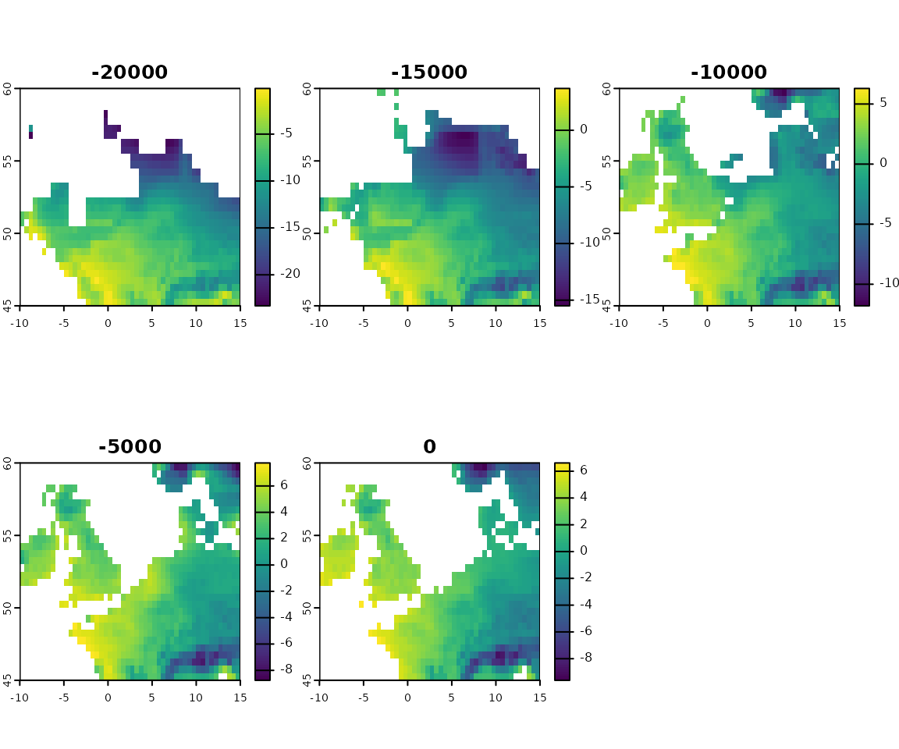
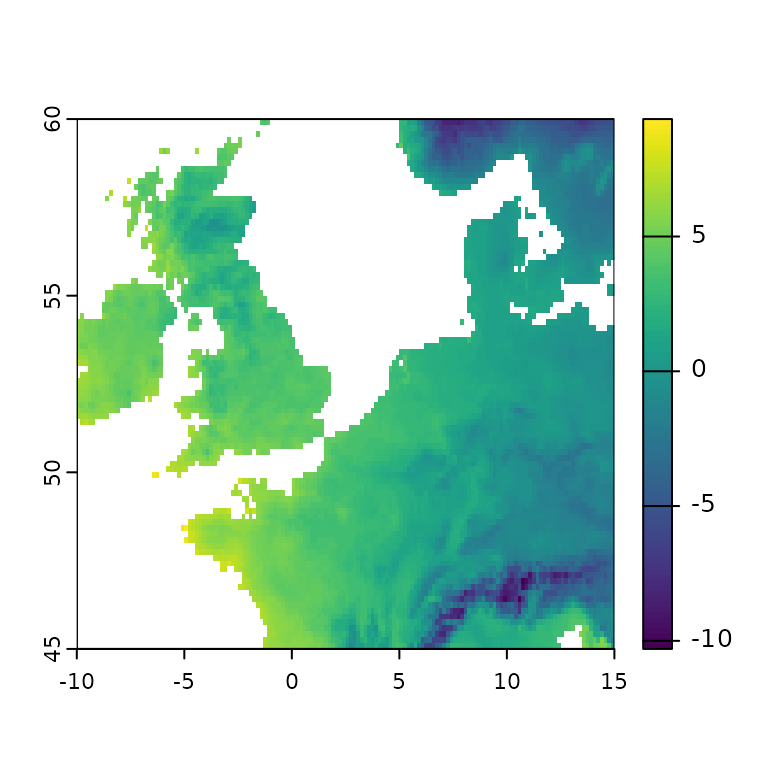
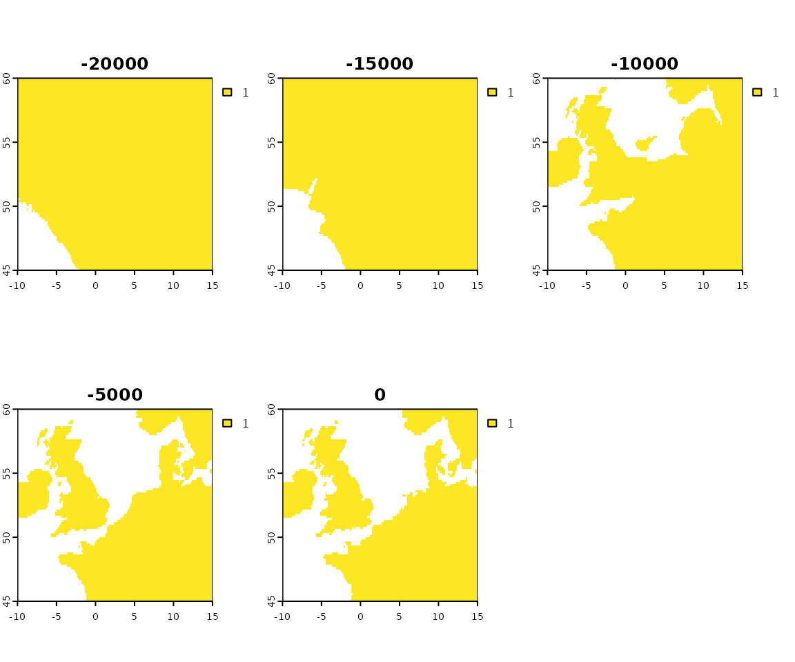
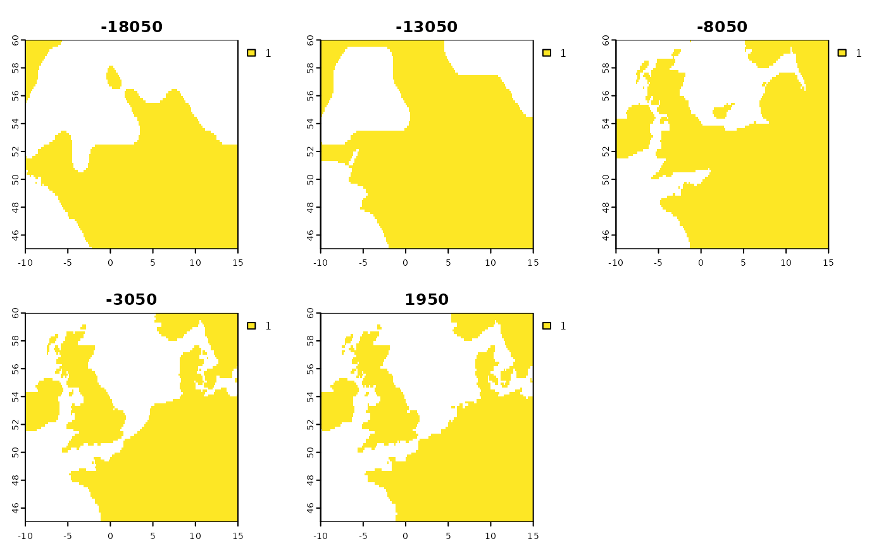
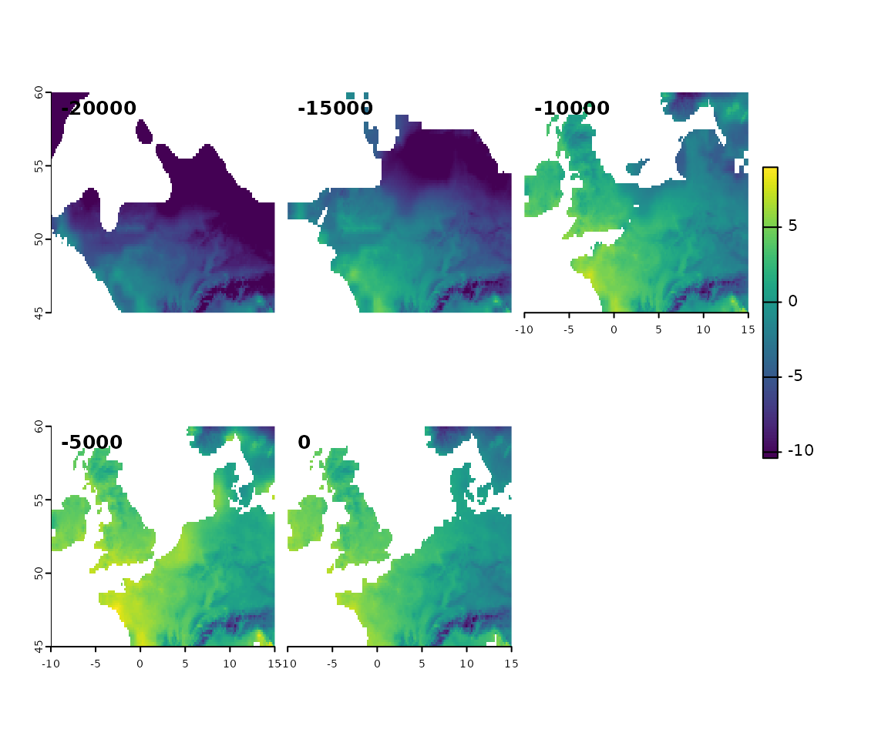
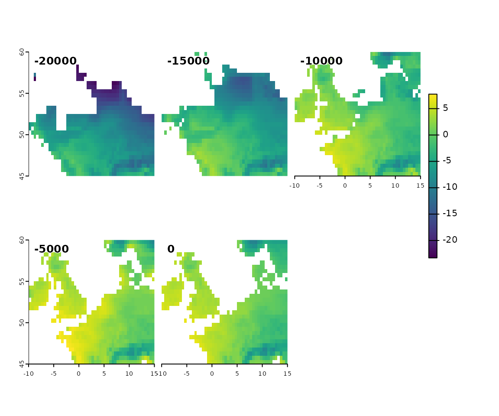
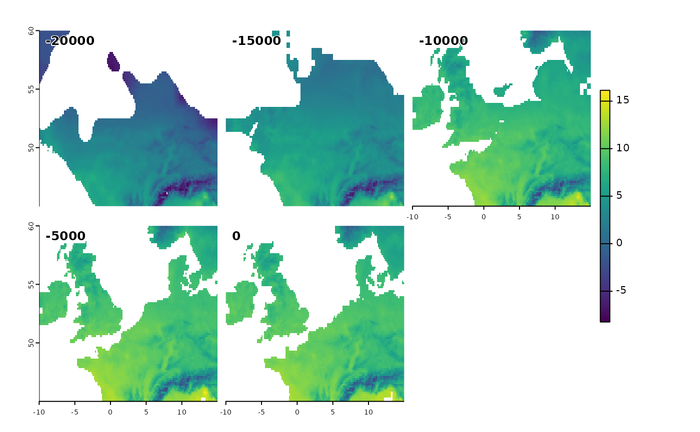

Downscaling
Climate reconstructions from global circulation models are often at
coarser resolutions than desired for ecological analyses. Downscaling is
the process of generating a finer resolution raster from a coarser
resolution raster. There are many methods to downscale rasters, and
several are implemented in specific R packages. For
example, the terra package can downscale reconstructions
using bilinear interpolation, a statistical approach that is simple and
fast. For palaeoclimate reconstructions, the delta method has been shown
to be very effective (Beyer et al, REF). The delta method is a simple
method that computes the difference between the observed and modelled
values at a given time step (generally the present), and then applies
this difference to the modelled values at other time steps. This
approach makes the important assumption that the fine scale structure of
the deviations between large scale model and finer scale observations is
constant over time. Whilst such an assumption is likely to hold
reasonably well in the short term, it may not hold over longer time
scales.
Delta downscaling a dataset in pastclim
pastclim includes functions to use the delta method for
downscaling. In this example, we will focus on Europe, as it shows
nicely the issues of sea level change and ice sheets, which need to be
accounted for when applying the delta downscale method. For real
applications, we would recommend using a bigger extent in areas of large
changes in land extent, as interpolating over a small extent can lead to
greater artefacts; for this example, we keep the extent small to reduce
computational time.
An example for one variable
Whilst we are often interested in downscaling composite bioclimatic variables (such as the warmest quarter), downscaling should be applied directly to monthly estimates of temperature and precipitation, and high resolution bioclimatic variables should be computed from these downscaled monthly estimates. This approach ensures that the downscaled bioclimatic variables are consistent with each other.
For downscaling, we will use the WorldClim2 dataset as our high resolution observations. We will use the Example dataset (a subset of the Beyer2020 dataset) as our low resolution model reconstructions. We start by extracting monthly temperature for northern Europe for both datasets:
#> Loading required package: terra
#> terra 1.8.26
library(pastclim)
tavg_vars <- c(paste0("temperature_0", 1:9), paste0("temperature_", 10:12))
time_steps <- get_time_bp_steps(dataset = "Example")
n_europe_ext <- c(-10, 15, 45, 60)
download_dataset(dataset = "Beyer2020", bio_variables = tavg_vars)
tavg_series <- region_series(
bio_variables = tavg_vars,
time_bp = time_steps,
dataset = "Beyer2020",
ext = n_europe_ext
)Downscaling is performed one variable at a time. We will start with
temperature in January. So, we first need to extract the
SpatRaster of model low resolution data from the
SpatRasterDataset:
tavg_model_lres_rast <- tavg_series$temperature_01
tavg_model_lres_rast
#> class : SpatRaster
#> dimensions : 30, 50, 5 (nrow, ncol, nlyr)
#> resolution : 0.5, 0.5 (x, y)
#> extent : -10, 15, 45, 60 (xmin, xmax, ymin, ymax)
#> coord. ref. : lon/lat WGS 84
#> source(s) : memory
#> names : temper~-20000, temper~-15000, temper~-10000, temper~_-5000, temper~e_01_0
#> min values : -23.3037052, -15.498360, -11.794130, -8.754138, -9.613334
#> max values : -0.1343476, 3.690956, 6.295014, 7.745749, 6.616667
#> unit : degrees Celsius, degrees Celsius, degrees Celsius, degrees Celsius, degrees Celsius
#> time (years): -18050 to 1950And we can now plot it:

We can see how that the reconstructions are rather coarse (the Beyer2020 dataset uses 0.5x0.5 degree cells). We now need a set of high resolutions observations for the variable of interest that we will use to generate the delta raster used to downscale reconstructions. We will use data from WorldClim2 at 10 minute resolution (but other datasets such as CHELSA would be equally suitable):
Once the variable is downloaded, we can load it at any time with:
download_dataset(dataset = "WorldClim_2.1_10m", bio_variables = tavg_vars)
tavg_obs_hres_all <- region_series(
bio_variables = tavg_vars,
time_ce = 1985,
dataset = "WorldClim_2.1_10m",
ext = n_europe_ext
)For later use, we store the range of the variable, which we will use to bound the downscaled values (arguably, it would be better to grab these limits from the full world distribution, but for this example, we will use the European range)
tavg_obs_range <- range(
unlist(
lapply(tavg_obs_hres_all, minmax, compute = TRUE)
)
)
tavg_obs_range
#> [1] -10.40350 24.43275We want to crop these reconstructions to the extent of interest
tavg_obs_hres_all <- terra::crop(tavg_obs_hres_all, n_europe_ext)
# extract the January raster
tavg_obs_hres_rast <- tavg_obs_hres_all[[1]]
plot(tavg_obs_hres_rast)
We need to make sure that the extent of the modern observations is the same as the extent of the model reconstructions:
If that was not the case, we would use terra::crop to
match the extents.
We also need a high resolution global relief map (i.e. integrating both topographic and bathymetric values) to reconstruct past coastlines following sea level change. We can download the ETOPO2022 relief data, and resample to match the extent and resolution as the high resolution observations.
download_etopo()
relief_rast <- load_etopo()
relief_rast <- terra::resample(relief_rast, tavg_obs_hres_rast)We can now generate a high resolution land mask for the periods of
interest. By default, we use the sea level reconstructions from Spratt
et al 2016, but a different reference can be used by setting sea levels
for each time step (see the man page for make_land_mask for
details):
land_mask_high_res <- make_land_mask(
relief_rast = relief_rast,
time_bp = time_bp(tavg_model_lres_rast)
)
plot(land_mask_high_res, main = time_bp(land_mask_high_res))
Note that this land mask does take ice sheets into account, and the Black and Caspian sea are missing. For the ice mask, we can:
ice_mask_low_res <- get_ice_mask(time_bp = time_steps, dataset = "Beyer2020")
ice_mask_high_res <- downscale_ice_mask(
ice_mask_low_res = ice_mask_low_res,
land_mask_high_res = land_mask_high_res
)
plot(ice_mask_high_res)Note that there is no ice mask for the last two time steps.
We can now remove the ice mask from the land mask:
land_mask_high_res <- mask(land_mask_high_res,
ice_mask_high_res,
inverse = TRUE
)
plot(land_mask_high_res)
If it was a region with internal seas, we could then remove them with:
internal_seas <- readRDS(system.file("extdata/internal_seas.RDS",
package = "pastclim"
))
land_mask_high <- mask(land_mask_high_res,
internal_seas,
inverse = TRUE
)We can now compute a delta raster and use it to downscale the model reconstructions:
delta_rast <- delta_compute(
x = tavg_model_lres_rast, ref_time = 0,
obs = tavg_obs_hres_rast
)
model_downscaled <- delta_downscale(
x = tavg_model_lres_rast,
delta_rast = delta_rast,
x_landmask_high = land_mask_high_res,
range_limits = tavg_obs_range
)
model_downscaled
#> class : SpatRaster
#> dimensions : 90, 150, 5 (nrow, ncol, nlyr)
#> resolution : 0.1666667, 0.1666667 (x, y)
#> extent : -10, 15, 45, 60 (xmin, xmax, ymin, ymax)
#> coord. ref. : lon/lat WGS 84
#> source(s) : memory
#> names : temper~-20000, temper~-15000, temper~-10000, temper~_-5000, temper~e_01_0
#> min values : -10.403500, -10.40350, -10.403500, -9.289666, -10.300500
#> max values : 1.350215, 4.70648, 7.546785, 8.997520, 7.445105
#> time (years): -18050 to 1950Let’s inspect the resulting data:

And, as a reminder, the original reconstructions:

Computing the bioclim variables
To compute the bioclim variables, we need to repeat the procedure
above for temperature and precipitation for all months. Let us start
with temperature. We loop over each month, create a
SpatRaster of downscaled temperature, add it to a list, and
finally convert the list into a SpatRasterDataset
tavg_downscaled_list <- list()
for (i in 1:12) {
delta_rast <- delta_compute(
x = tavg_series[[i]], ref_time = 0,
obs = tavg_obs_hres_all[[i]]
)
tavg_downscaled_list[[i]] <- delta_downscale(
x = tavg_series[[i]],
delta_rast = delta_rast,
x_landmask_high = land_mask_high_res,
range_limits = tavg_obs_range
)
}
tavg_downscaled <- terra::sds(tavg_downscaled_list)Quickly inspect the resulting dataset:
tavg_downscaled
#> class : SpatRasterDataset
#> subdatasets : 12
#> dimensions : 90, 150 (nrow, ncol)
#> nlyr : 5, 5, 5, 5, 5, 5, 5, 5, 5
#> resolution : 0.1666667, 0.1666667 (x, y)
#> extent : -10, 15, 45, 60 (xmin, xmax, ymin, ymax)
#> coord. ref. : lon/lat WGS 84
#> source(s) : memoryAs expected, we have 12 months (subdatasets), each with 5 time steps.
We now want to repeat the same procedure for precipitation. In this example we will downscale precipitation in its natural scale, but often we use logs. We now need to create a series for precipitation:
prec_vars <- c(paste0("precipitation_0", 1:9), paste0("precipitation_", 10:12))
prec_series <- region_series(
bio_variables = prec_vars,
time_bp = time_steps,
dataset = "Beyer2020",
ext = n_europe_ext
)Get some high resolution observations:
download_dataset(dataset = "WorldClim_2.1_10m", bio_variables = prec_vars)
prec_obs_hres_all <- region_series(
bio_variables = prec_vars,
time_ce = 1985,
dataset = "WorldClim_2.1_10m",
ext = n_europe_ext
)Estimate the range of observed precipitation:
prec_obs_range <- range(
unlist(
lapply(prec_obs_hres_all, minmax,
compute = TRUE
)
)
)
prec_obs_range
#> [1] 10 365And finally downscale precipitation:
prec_downscaled_list <- list()
for (i in 1:12) {
delta_rast <- delta_compute(
x = prec_series[[i]], ref_time = 0,
obs = prec_obs_hres_all[[i]]
)
prec_downscaled_list[[i]] <- delta_downscale(
x = prec_series[[i]],
delta_rast = delta_rast,
x_landmask_high = land_mask_high_res,
range_limits = prec_obs_range
)
}
prec_downscaled <- terra::sds(prec_downscaled_list)We are now ready to compute the bioclim variables:
bioclim_downscaled <- bioclim_vars(
tavg = tavg_downscaled,
prec = prec_downscaled
)
#> varnames was empty, so we will use the names to label the layers
#> varnames was empty, so we will use the names to label the layers
#> varnames was empty, so we will use the names to label the layers
#> varnames was empty, so we will use the names to label the layers
#> varnames was empty, so we will use the names to label the layers
#> varnames was empty, so we will use the names to label the layers
#> varnames was empty, so we will use the names to label the layers
#> varnames was empty, so we will use the names to label the layers
#> varnames was empty, so we will use the names to label the layers
#> varnames was empty, so we will use the names to label the layersLet’s inspect the object:
bioclim_downscaled
#> class : SpatRasterDataset
#> subdatasets : 17
#> dimensions : 90, 150 (nrow, ncol)
#> nlyr : 5, 5, 5, 5, 5, 5, 5, 5, 5
#> resolution : 0.1666667, 0.1666667 (x, y)
#> extent : -10, 15, 45, 60 (xmin, xmax, ymin, ymax)
#> coord. ref. : lon/lat WGS 84
#> source(s) : memory
#> names : bio01, bio04, bio05, bio06, bio07, bio08, ...And plot the first variable (bio01):
We can now save the downscaled sds to a netcdf file:
terra::writeCDF(bioclim_downscaled,
paste0(tempdir(), "/EA_bioclim_downscaled.nc"),
overwrite = TRUE
)And then use it as a custom dataset for any function in
pastclim. Let’s extract a region series for three
variables:
custom_data <- region_series(
bio_variables = c("bio01", "bio04", "bio19"),
dataset = "custom",
path_to_nc = paste0(tempdir(), "/EA_bioclim_downscaled.nc")
)We can quickly inspect the resulting sds object:
custom_data
#> class : SpatRasterDataset
#> subdatasets : 3
#> dimensions : 90, 150 (nrow, ncol)
#> nlyr : 5, 5, 5
#> resolution : 0.1666667, 0.1666667 (x, y)
#> extent : -10, 15, 45, 60 (xmin, xmax, ymin, ymax)
#> coord. ref. : lon/lat WGS 84
#> source(s) : EA_bioclim_downscaled.nc
#> names : bio01, bio04, bio19And plot it (it should be identical to the earlier plot obtained when we created the dataset):
